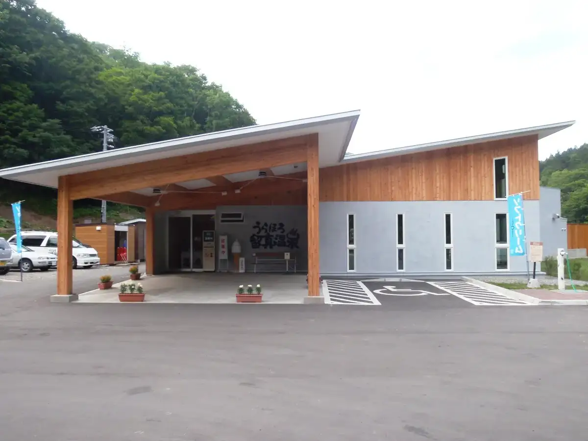
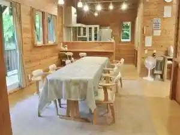
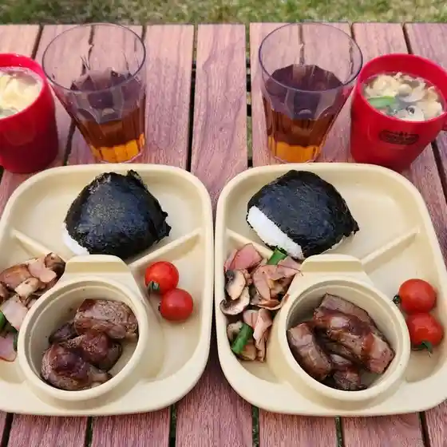
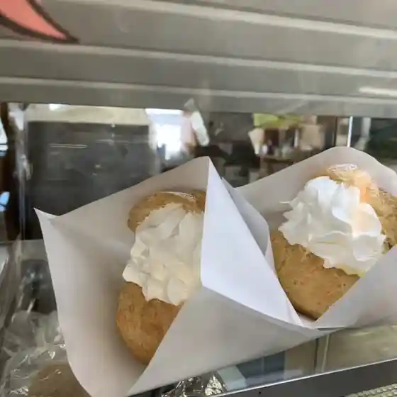
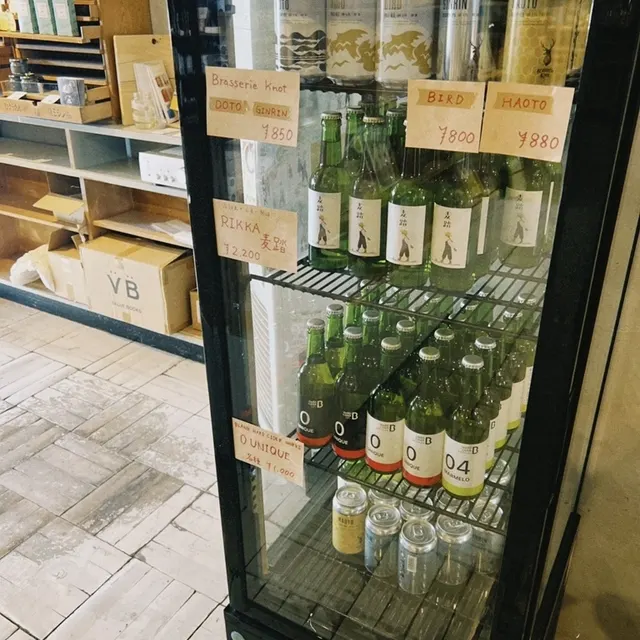
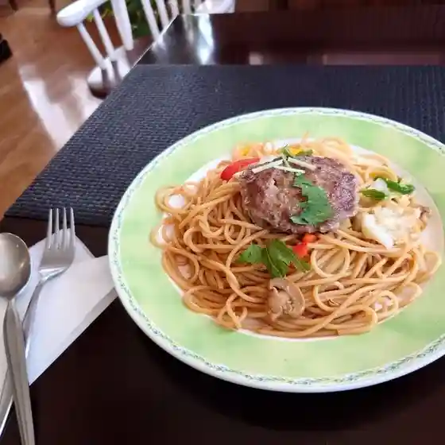
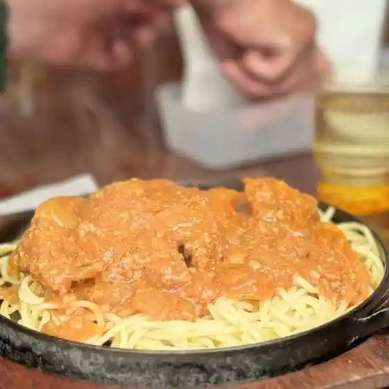
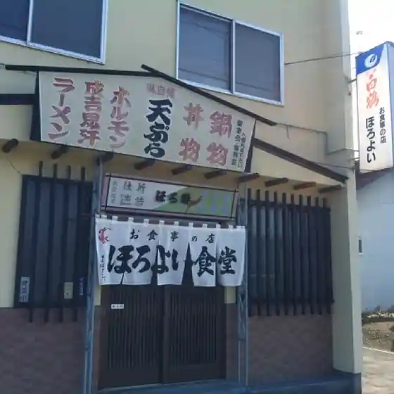

Urahoro
Urahoro · Hokkaido
Urahoro
Highlighted on the Hokkaido map.

Stay
うらほろ留真温泉貸切コテージ

Urahoro Ryuu Makoto Onsen Kashikiri Koteeji
Dining
炉ばたたらふく

Ro Batatarafuku
フクハラ 浦幌店

Fukuhara Urahoro Mise
道の駅 うらほろ

Michi No Eki Urahoro
活

Katsu
トリノメ商店

Torinome Shouten
カナリア喫茶

Kanaria Kissa
お食事処 榮

O Shokuji Tokoro Sakae
ほろよい食堂

Horoyoi Shokudou
留真温泉
Ryuu Makoto Onsen
トコムロ カフェ
Tokomuro Kafe
ラーメン寳龍 浦幌店
Raamen Houryuu Urahoro Mise
橋本旅館
Hashimoto Ryokan
ザ・ベジタブルショップ21
Za Bejitaburushoppu 21
まる maru
Maru Maru
食の館 てんま
Shokuno Kan Tenma
居酒屋凪
Izakaya Nagi
燈
Tou
阿部食堂
Abe Shokudou
松屋
Matsuya
コージーハウス
Koojiihausu
とりせい
Torisei
かし和家
Kashi Wa Ie
高沢旅館
Takazawa Ryokan
ちゃんこ両国
Chanko Ryougoku